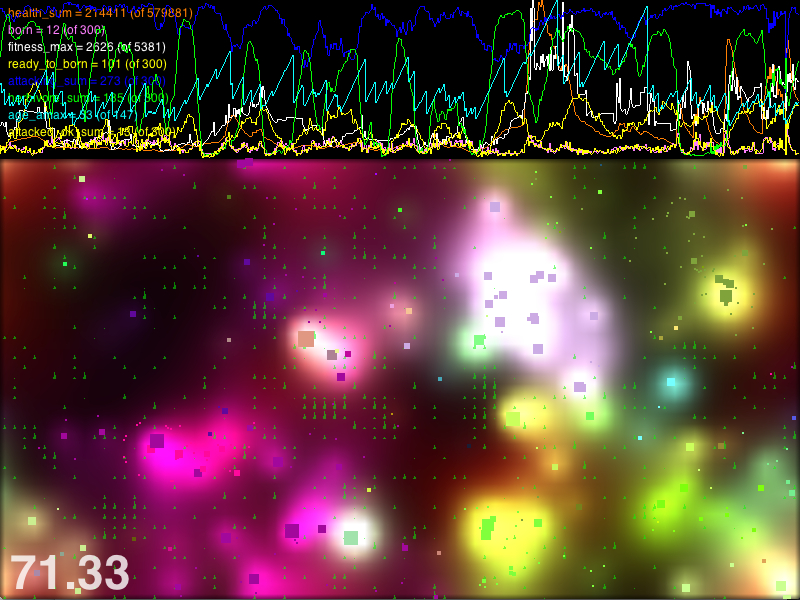

Эволюция цифровых микробов (Python и вычисления)
| Автор: | Руслан Гроховецкий (ruguevara@yandex-team.ru) |
|---|---|
| Организация: | Яндекс |
| Город: | Екатеринбург |
| Мероприятие: | День СПО |
| Copyright: | Public Domain |
Меня зовут Руслан Гроховецкий, я работаю в Яндексе руководителем группы справочных сервисов, мы разрабатываем бакенды Яндекс.Погоды и Яндекс.Афиши и используем Python и Django.
Я пишу на Питоне уже около семи лет, и у меня есть ряд хобби-проектов, на примере одного из них я бы хотел поговорить о свободном ПО.
Contents
- Что за цифровые микробы?
- Как они эволюционируют?
- Какую задачу решаем
- Что за технологии?
- Что за технологии?
- Оптимизация и маш. обуч.
- Визуализация
- Интерфейс пользователя
- Готовые установочные пакеты
- Тысячи их
- Почему Python
- Быстрые вычисления
- Чем этот стек уникален
- Почему не MATLAB, Octave, R
- Почему не C/C++/Fortran?
- Только свободное ПО
- Приходите на стенд
Что за цифровые микробы?
Это коэволюция, то есть совместная эволюция, простейших цифровых микроогранизмов, которые состоят из сенсоров, рекуррентной нейросети и актуаторов. Актуаторы, это то, что действует на среду: ноги, руки, а в нашем случае это жгутики и рот.
Цифровые микробы живут в искусственной среде с растущей травой (маленькие зеленые треугольники): они имеют цвет, чувствуют запахи, перемещаются, сами распространяют запахи, едят, растут, дерутся и размножаются.
Как они эволюционируют?

Какую задачу решаем
Что за технологии?
Что за технологии?
- Theano [5] — CPU/GPU компилятор математических выражений с массивами
- PyCuda [6], PyOpenCL [7] — для вычислений на графическом ускорителе
- SymPy [8] — символьная математика, алгебра, дифференцирование и интегрирование
- Pandas [9] — работа с сериями данных: наблюдения, логи, события
- StatsModels [10] — статистика и статистические модели
Оптимизация и маш. обуч.
- Scikit-learn [11] — машинное обучение и дата майнинг
много
PyBrains, PyML — Байес, нейростети, марковские модели,
PyEvolve — генетические алгоримы
Визуализация
Интерфейс пользователя
- PyQT
много
wxPython
PyGTK
Cocos2D (более низкоуровневый)
Готовые установочные пакеты
- Python(x,y)
есть
Enthought Python Distribution
Тысячи их
Почему Python
- Python — настоящий универсальный ЯП
Питон уже является универсальным ЯП, что само по себе огромный плюс. Он имеет лаконичный, читабельный синтаксис и помогает достичь быстрой разработки: питон не стоит на пути, мы просто пишем наш алгоритм, не думая об специфических деталях.
- Быстрая разработка и производительный код
Не нужны предварительные прототипы, то есть это альтернатива схеме "сначала пишем прототип, потом продакшн код". Большая часть кода уже производительная, небольшими затратами можем оптимизировать его до приемлемого уровня, если нужно внедрить это куда-то.
- Библиотеки для работы с БД
Есть библиотеки для работы со всеми популярными базами данных, для вычислений может быть важно данные брать оттуда.
- Управление зависимостями — pip, virtualenv
Что немаловажно, есть удобные инструменты, которые максимально облегчают установку пакетов и управление зависимостями — pip, virtualenv.
Быстрые вычисления
Ядра библиотек компилированы (C/C++/Cython)
- Или биндинги до industrial-class библиотек (LAPack, BLAS, ...)
Ядра библиотек компилированы (C/C++/Cython), используют биндинги до inductrial-class библиотек (LAPack, BLAS, OpenGL)
- Скорость работы программ хорошая (векторизация)
Если вы используете векторизацию, то скорость работы программ будет хорошей и годной для исследовательских целей, а часто и для любых целей. Это не суперскорость, но очень разумный компромисс между скоростью вычислений и процесса разработки.
- Делают игры (pygame или pyglet+cocos2d)
На этом стеке технологий иногда делают инди-игры
- Cython
Критичные части можно написать на компилируемом языке Cython.
Чем этот стек уникален
- Огромное комьюнити
Питон и эти библиотеки имеют огромное комьюнити, это технологии-лидеры, а не десятки разных недобиблиотек. Есть большое количество обучающего материала и даже международные конференции.
- Мощь и удобство
Я считаю, что это уникальный случай, когда открытые технологии настолько мощны и удобны.
- Все технологии — открытые, как наука
Научное сообщество, как никакое другое, понимает важность открытости. Ричард Столман сам из них. Некоторые из истоков этого стека технологий уходят корнями в глубь эпохи Фортрана, поэтому у нас есть возможность стоять на плечах гигантов, как говорил Ньютон. Только откытость ПО поволила достичь этого.
Почему не MATLAB, Octave, R
- Это отдельные специфические неуниверсальные ЯП
Это отдельные специфические неуниверсальные ЯП, которые нужно учить.
- Проблемы с интеграцией с чем-нибудь
Поэтому если вам нужно что-о большее, чем исследование, и интеграция с чем-то, например, с базами данных, вебом, сетью, системой, другим ПО, это сложнее и трудозатратнее.
MATLAB небесплатен и несвободен
Почему не C/C++/Fortran?
- Писать на C++ — это не быстро
Так как стоит исследовательская задача, то необходимо, чтобы процесс разработки не стоял на пути и разработка была быстрой, поэтому C++ — не очень вариант.
- Нужен специфический опыт и постоянное внимание к языковым деталям
Например, работа с памятью требует постоянного внимания и специфического опыта. Или другие детали, такие как стандартная библиотека шаблонов, о которых нужно постоянно думать, стоят на пути вашей чистой исследователькой мысли.
Только свободное ПО
- Fork me on github: https://github.com/ruguevara/MELA
Можете на гитхабе форкнуть этот проект и поиграться
Презентация сделана в формате reStructuredText [16] и сконвертирована с помощью Docutils [17] в слайдшоу S5 [18]
Приходите на стенд
Я рассказал вам об уникальном стеке открытых технологий для исследований, которые основаны на вычислениях.
И я призыаю вас посмотреть на наш стенд, где я рассажу и покажу подробнее о том, как все это работает на примере исследования эволюции цифровых микробов.
Также на нашем стенде вы можете предварительно записаться в Школу Анализа Данных Яндекса, где мы вас научим делать в том числе и быстрые вычесления на Питоне
Ссылки
| [1] | http://python.org/ |
| [2] | http://numpy.scipy.org/ |
| [3] | http://scipy.org/ |
| [4] | http://scikits.appspot.com/ |
| [5] | http://deeplearning.net/software/theano/ |
| [6] | http://mathema.tician.de/software/pycuda |
| [7] | http://mathema.tician.de/software/pyopencl |
| [8] | http://sympy.org/ |
| [9] | http://pandas.pydata.org/ |
| [10] | http://statsmodels.sf.net/ |
| [11] | http://scikit-learn.org/stable/ |
| [12] | http://mlpy.sourceforge.net/ |
| [13] | http://www.pyglet.org/ |
| [14] | http://matplotlib.org/ |
| [15] | http://dirac.cnrs-orleans.fr/ScientificPython/ |
| [16] | http://docutils.sf.net/rst.html |
| [17] | http://docutils.sf.net/ |
| [18] | http://meyerweb.com/eric/tools/s5/ |